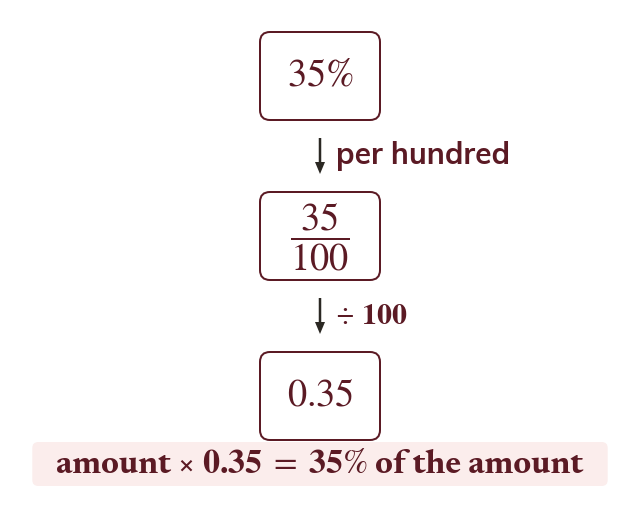

Percentage means per hundred
Per cent means per hundred:
To find of an amount, multiply by the multiplier.
"Per cent" literally means "per hundred", so is the fraction which is also the decimal
To find of an amount, multiply the amount by that decimal - called the multiplier. For example so of an amount is that amount ×
To find of an amount, multiply the amount by that decimal - called the multiplier. For example so of an amount is that amount ×